Test
test
Foo
Bar
Third column
With some content
Wide column
Aligned with the right column
Tall column
With even more content
Votre MacBook Pro ne s’allume plus : Le guide ultime de diagnostic
Ecran noir sur MacBook Air 11 mi-2014: La solution !
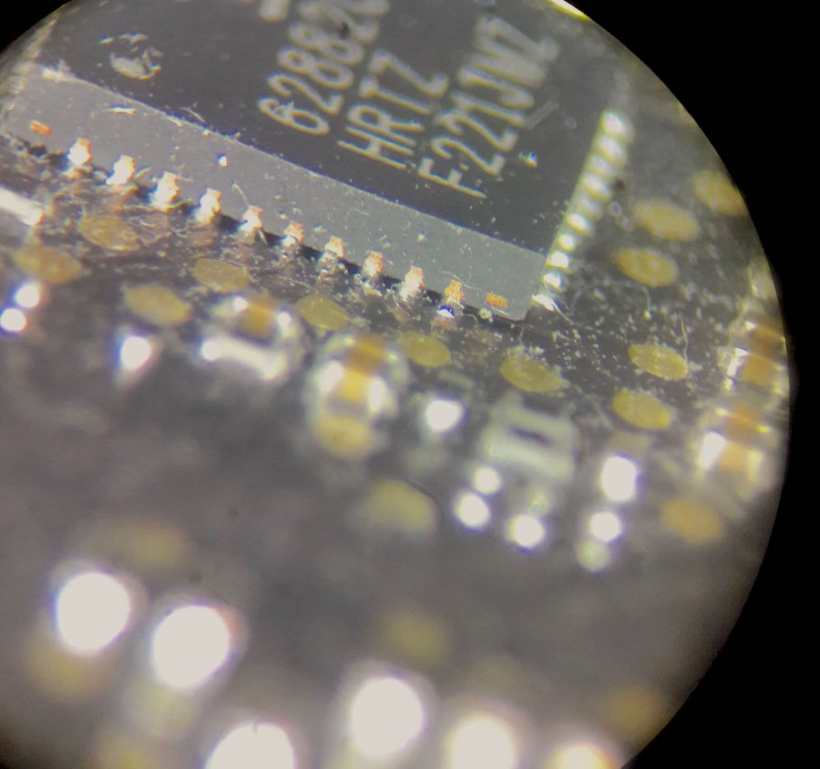
MacBook Pro et Problème de GPU : Le guide ultime
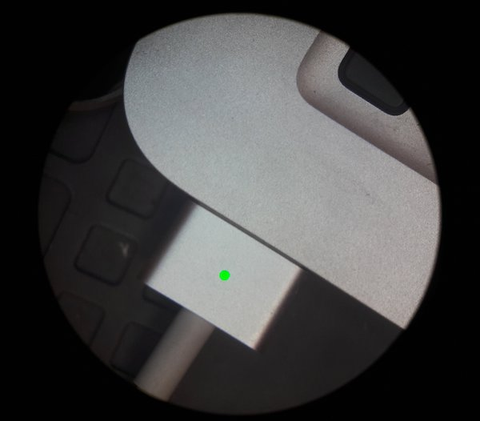
Comment diagnostiquer un MacBook Pro qui ne charge plus?
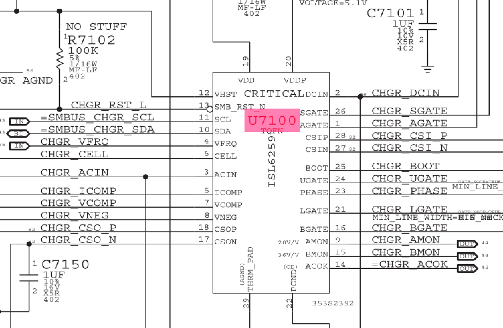
Batterie non-reconnue et ISL6259
Mac qui à pris du liquide: réflexes, guide et conseils
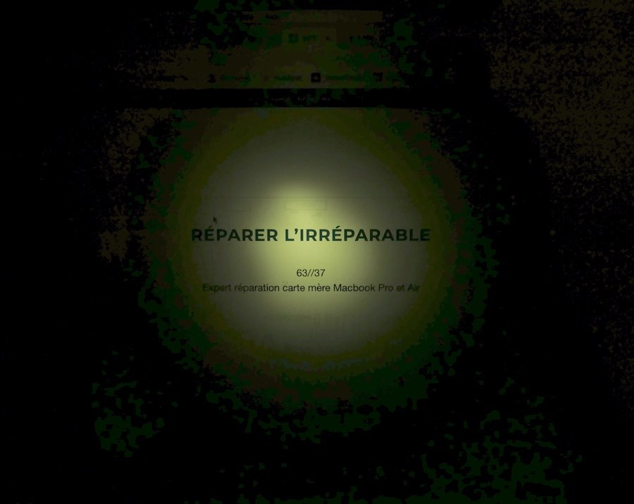
Rétro-éclairage des MacBook Pro: Le guide technique
Réparer une carte mère HS de Macbook Pro, c’est possible ça ?
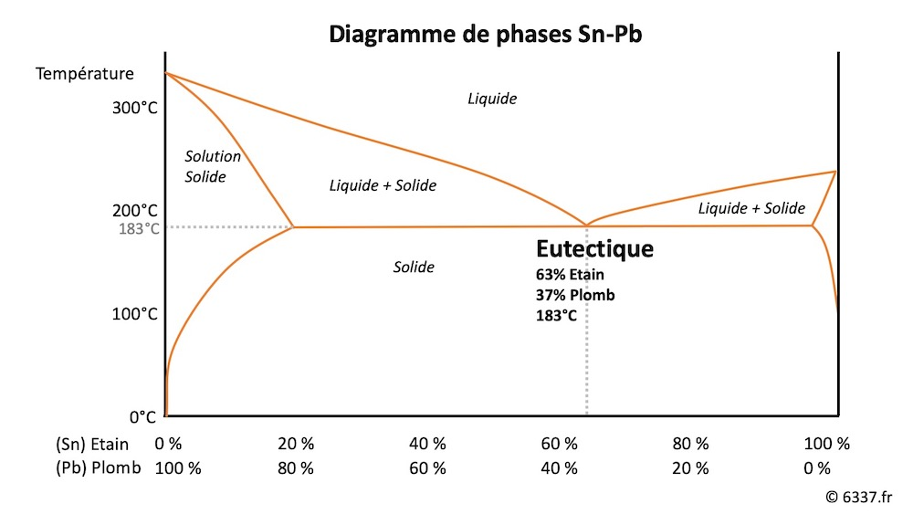
6337 : et pourquoi pas 1664 ?
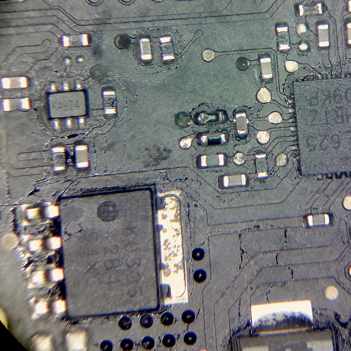
Liquide renversé et carte mère MacBook Pro HS: c'est réparable ?
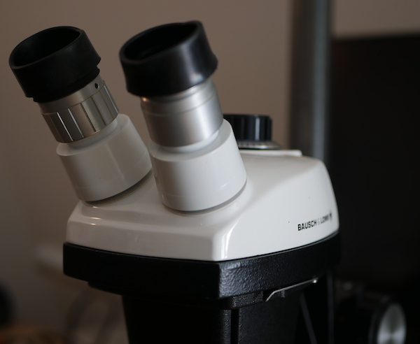
Carte mère Macbook Pro: les outils indispensables pour les réparer
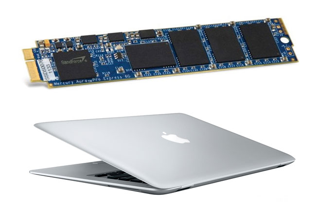
4 solutions pour changer de SSD sur un MacBook Air
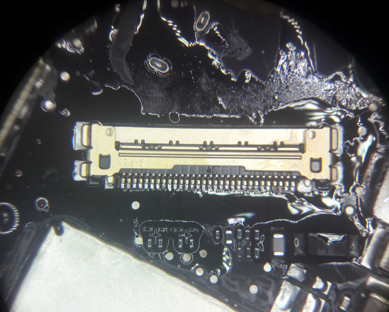
Macbook Pro Retina: Réparer le rétroéclairage
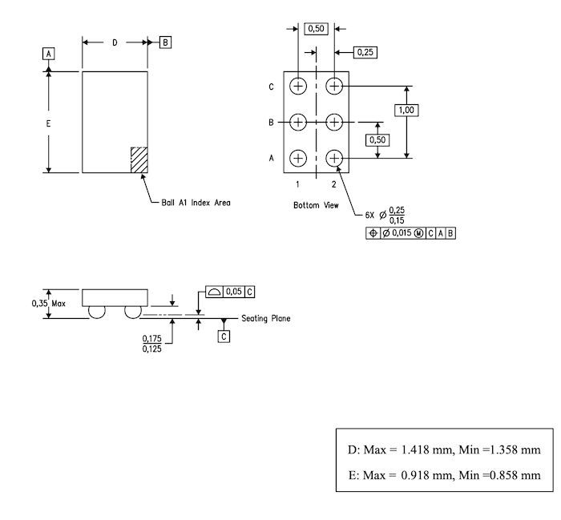
Macbook Pro Retina Fin 2013 qui ne démarre plus
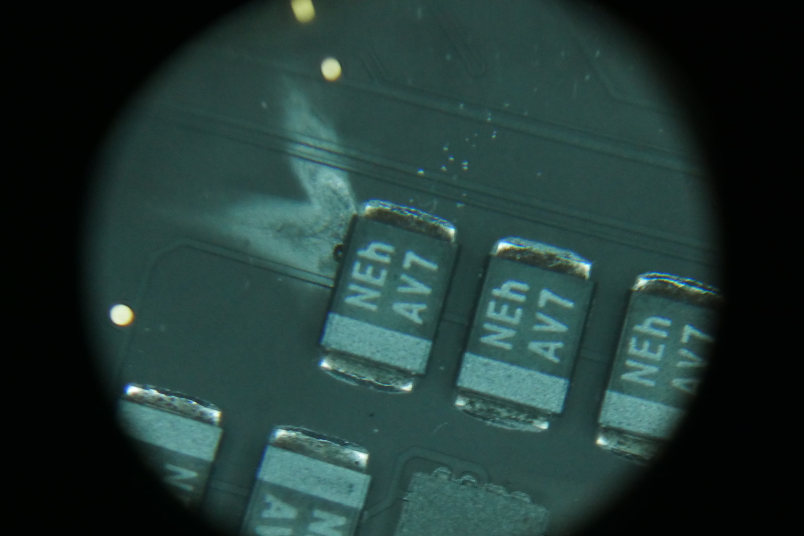
Macbook Air 2015 qui ne s'allume plus: La solution est parfois évidente
Le Bac Ultrason: Outil essentiel pour réparer une carte mère ?
iMac 2009 A1311 - Carte mère 820-2494: Mort? Pas tout à fait...